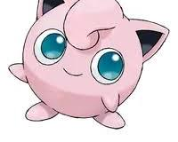
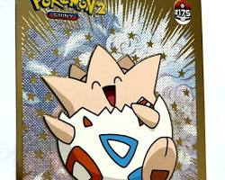
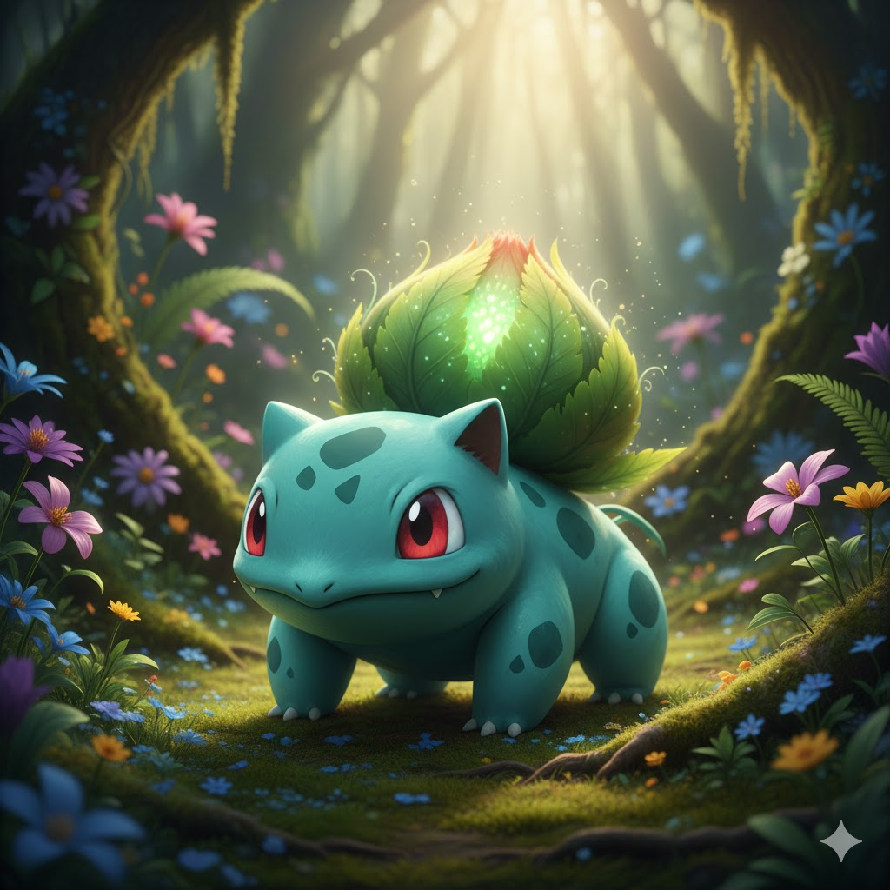
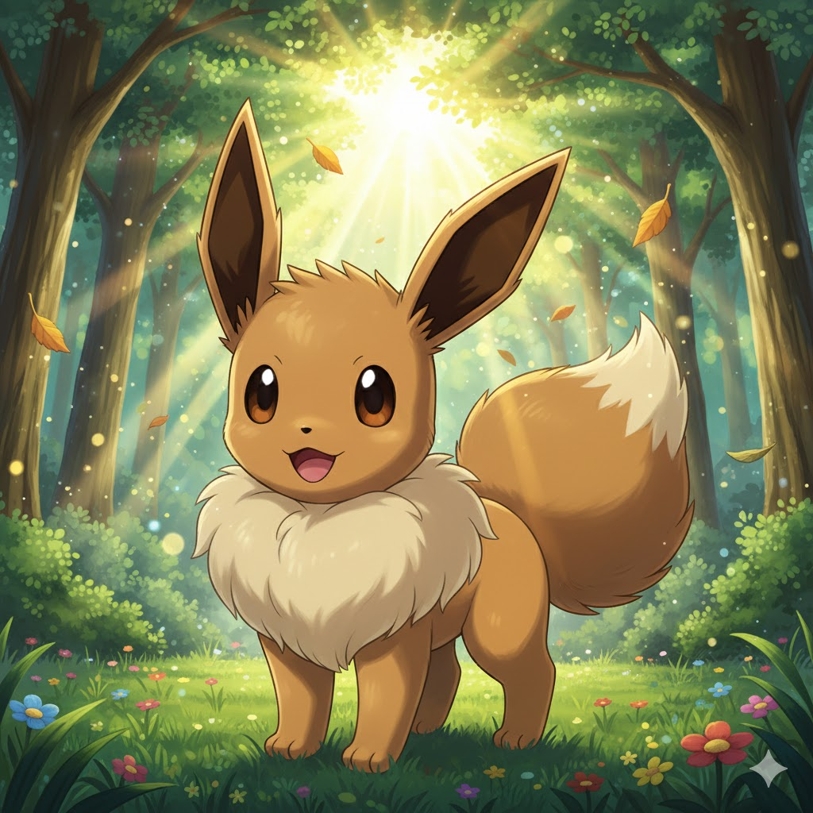

L'Univers Pokémon
Au-delà du charme visuel, c’est la découverte d’un jeu d'une richesse insoupçonnée. Pokémon, c'est un mélange de stratégie et de collection. Il faut apprendre à composer une équipe équilibrée, comprendre les forces et faiblesses de chaque type (le feu, l'eau, l'herbe...), tout en cultivant un lien de confiance avec ses compagnons de route. C’est un voyage initiatique basé sur la patience et l'exploration, où l'on grandit en même temps que nos créatures »



